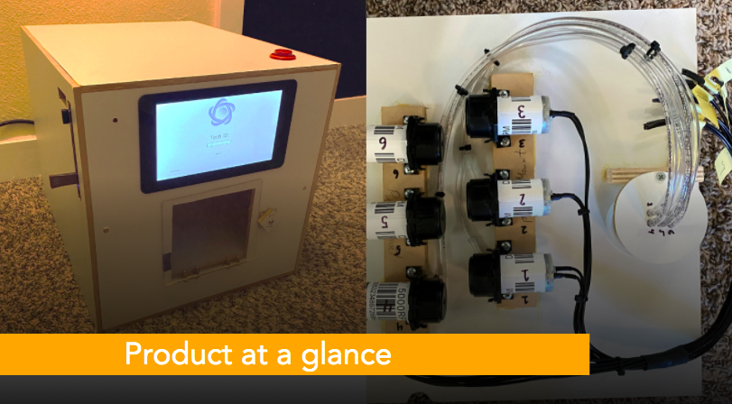

Pharmaceutical Compounding Filler
The Motivation
The motivation of this device came from the desire to create an affordable and easy-to-use system for compounding customized medicine on a large scale. First, we make it able to produce low-cost alternative supplements and medicine while maintaining good quality, which takes away the power from pharmaceutical companies interested in monopolizing medicine for profits. Second, we ease the large scale compounding process for personalized medicine by providing an automated and user-friendly approach for pharmacists. In addition, with the ability to make lipophilic Active Pharmaceutical Ingredients (APIs) molecularly suspended in aqueous solutions, the commercialization of customized medicine on a massive scale can be made possible.
Implementation
We developed the Pharmaceutical Compounding Filler to be able to mix different active ingredients based on a prescribed recipe with the goal of making medicine personalized . Through reading barcodes or importing files from the USB, the table top device executes the request by dispensing specific ratio of active ingredients into a 30mL bottle using high-resolution peristaltic pumps. The device also provides a highly intuitive and easy to use GUI to navigate the device.
- Peristaltic pumps to pump liquids
- Load cells for a feedback loop(dispensed liquid, bottle detection)
- FSM for low level pump control
- Kivy/Python for UI/UX integration
- Raspberry Pi
- Arduino
- Camera